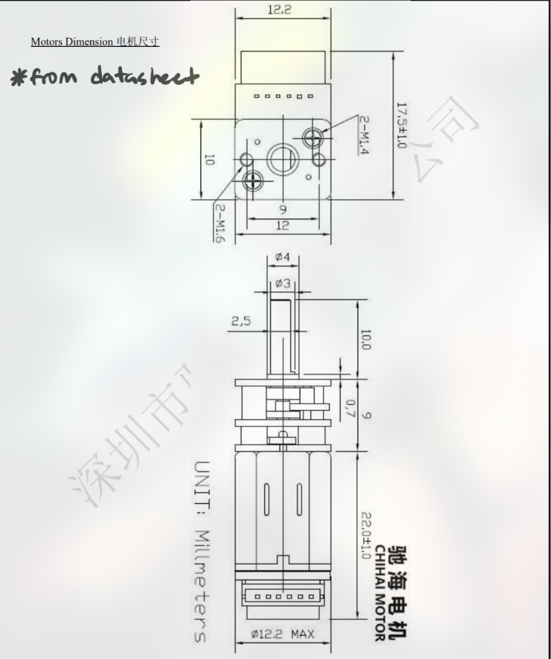
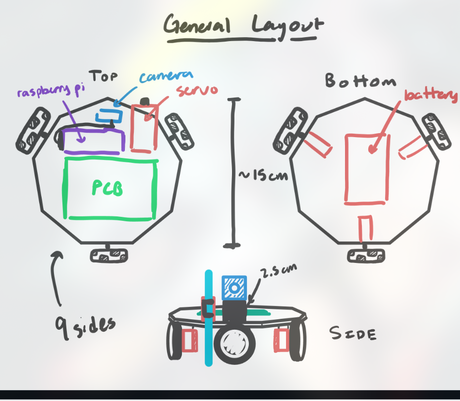

Notebook Entry Lab 11/11/24
Objectives
- Finalize motor identification and connections for the control system.
- Update the parts list with the required capacitors, resistors, and inductors for PCB design.
- Review and refine the general layout of the robot components, including battery, Raspberry Pi, and servo placement.
Progress
-
Motor Identification and Wiring:
- Identified motor pins and their corresponding connections:
- OUT1, OUT2, and OUT3 mapped to motor output pins.
- CF1 and CF2 for current feedback.
- 3.3V and GND for power.
- Verified the PWM signals from the controller and reviewed the output waveform for consistency with the desired motor behavior.
- Identified motor pins and their corresponding connections:
-
Updated Parts List:
- Capacitors (C): , , , .
- Resistors (R): , , , , , , .
- Inductors (L): .
- Verified counts and confirmed all necessary components are available for assembly.
-
Component Layout:
- Completed a detailed layout of the robot:
- General layout includes the top and bottom placements.
- Raspberry Pi mounted at the top alongside the servo for camera movement.
- PCB and battery located at the bottom for weight distribution.
- Ensured all components are securely mounted with proper clearance for screws and accessibility.
- Completed a detailed layout of the robot:
(diagrams courtesy of partner mjpaul3)


-
Design Dimensions:
- Referenced motor dimensions and wheel configurations directly from the datasheets.
- Integrated omniwheels and servo clearances into the layout to ensure smooth operation.
-
Battery and Power Connections:
- Finalized the battery placement and connections.
- Ensured compatibility with power regulators and designed for easy accessibility during operation.
Next Steps
- Test the motor drivers and PWM control to confirm functionality with the updated connections.
- Begin assembling the robot with the finalized layout and components.
- Simulate and verify power stability across all subsystems before moving to integrated testing.